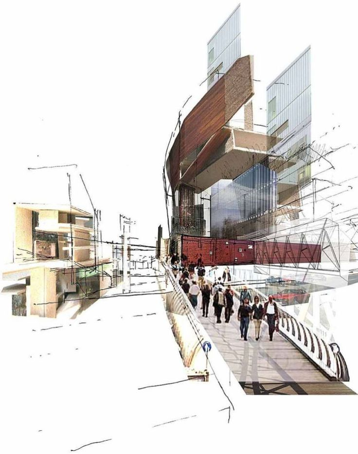

Компьютерный дизайн

Определение дизайна
© Архипова Карина
г. Копейск, 2020 г.

Дизайн - это знание, объединяющее в себе проектное мышление и творчество, мыслью которого является определение оптимальных характеристик промышленных объектов. Проектирование предметов, в которых форма соответствует их назначению, функциональна, экономична, удобна и при этом еще и красива.
Характерная черта дизайна заключается в том что, каждый объект рассматривается не только со стороны пользы, а должно пройти критику во всех сферах. То есть пройти путь, от формирования идеи и заканчивая производством.
Дизайнер ищет наилучшую форму каждого элемента, учитывая, как она зависит от рабочего назначения изделия и связей с человеком. Слаженность и контрастность как универсальные единые средства искусства являются образующими и в дизайне.
Художественное проектирование среды - не просто создание вещей, конструируя определенные функциональные и эстетические свойства, особенности вещам и предметной среде, художник «создает» человека, который будет пользоваться этими вещами, и жить в этой среде. Отсюда следует, важная значимость проектировщика, установить наиболее важные аспекты с целью производства этого предмета.
Дизайн открывает нам свободные возможности эстетических идей, новые красоты, значимость, величину и глубину человека, его воображение.
Дизайн - самобытный по своей природе, выявил и объединил множество сред воедино. Внес корректировку в создание предметного мира человека.
Профессионализм дизайнера и дизайнерской мысли имеет огромную часть в конструировании, а не только инженера – проектировщика, в идеале специалист все эти профессии должен совместить для получения идеального состояния и дальнейшей успешной работы в проектировании.
Дизайнерская мысль проявляет положительное влияние на социальную атмосферу, формирует эстетический вкус, творческое мышление, возможна, вдохновить на положительные действия, проявляет работоспособность, формирует комфортность, повышает жизненный тонус, проявление уважение к среде существования, дает более понятный вид для восприимчивости человека.
Дизайн, не так уж прост, как кажется на первый взгляд, дизайн это совокупность декоративной и графической деятельности. Так же в сферах управления можно встретить, например, где ведутся научно-исследовательские исследования, инженеры, проектировщики, технологи - практически всегда сталкиваются с необходимостью рисовать, так нагляднее можно изобразить, для восприимчивости. Данное действие - рисование, не ограничивает человека, тем самым дает свободу мышления, способность чувствовать гармонию мира раскрывают новые возможности восприятия мира и применения получаемых результатов в различных областях деятельности.